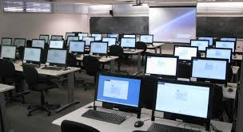

Welcome to the CSE Department

The Computer Science and Engineering (CSE) department at MJCET is dedicated to offering quality education that combines theoretical fundamentals with practical experience.
Our curriculum is designed to prepare students for careers in software development, data science, cybersecurity, AI, and research by providing hands-on lab sessions, collaborative projects, and industry exposure.